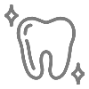
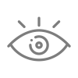
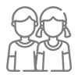
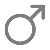
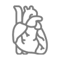
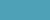
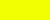

آماده
🧪
پودر ژلکننده
مایع را به ژل تبدیل میکند تا حمل ایمنتر و بدون نشت باشد.
روی کارتها کلیک کن — پر میشوند، بعد مثل ساکشن خالی میشوند. مدل را بچرخان.
هر کارت یکبار پر میشود (مایع)، با کلیک دوباره خالی میشود — استعارهٔ جمعآوری و تخلیه
مایع را به ژل تبدیل میکند تا حمل ایمنتر و بدون نشت باشد.
جلوگیری از سرریز و حفاظت از ساکشن مرکزی — ذرات تا ۰.۳ میکرون.
با همه دستگاههای ساکشن پرتابل و سانترال کار میکند.
طراحیشده برای جریان کار سریع در محیطهای حساس بیمارستانی.
بدون شستوشو — کنترل عفونت و کاهش بار کاری پرسنل.
۲ لیتر تکی تا ۸ لیتر سری یکردیفه — مناسب عملهای طولانی.
تولید شرکت دانشبنیان مخازن طبی آبادیس برای کنترل عفونت و ایمنی جریان کار در مراکز درمانی
کیسههای ساکشن آبادیس در حجمهای یک، دو و سه لیتری تولید میشوند و دارای سه نوع فیلتراسیون هیدروفوبیک، دوئال و مکانیکی هستند.
ویژگیهای مشترک: پودر ژلکننده، جلوگیری از سرریز مایعات، سازگاری با کلیه دستگاههای ساکشن، سیستم حفاظت از ساکشن مرکزی.
قابل نصب بهصورت تکی و سری روی پایه ثابت (دیواری) و پرتابل — نصب و خدمات پس از فروش رایگان.
مدل واقعی کیسه ساکشن ۲ لیتری — بکش، بچرخان، لمس کن.

از اورژانس تا اتاق عمل
حجم ساکشن: یک لیتر
مشخصات: پودر ژلکننده، فیلتر هیدروفوبیک، سازگار با کلیه دستگاههای ساکشن، حفاظت از ساکشن مرکزی
انواع فیلترهای کیسههای نهایی: فیلترهای استفادهشده در کیسههای آبادیس در ۳ نوع تولید میشود که موجب جلوگیری از سرریز مایعات میگردد: فیلترها
برای مشاهده نحوه استفاده از کیسه ساکشن ها به این صفحه مراجعه نمایید.
 آمبولانس
آمبولانس عفونی
عفونی
دندانپزشکی
چشم
کودکانمشخصات: پودر ژلکننده، فیلتر هیدروفوبیک (جلوگیری از سرریز)، سازگار با کلیه دستگاههای ساکشن، سیستم حفاظت از ساکشن مرکزی
انواع فیلترهای کیسههای نهایی: فیلترهای استفادهشده در کیسههای آبادیس در ۳ نوع تولید میشود که موجب جلوگیری از سرریز مایعات میگردد: فیلترها
برای مشاهده نحوه استفاده از کیسه ساکشن ها به این صفحه مراجعه نمایید.
 ریه و آندوسکوپی
ریه و آندوسکوپی گوارش
گوارش CCU / ICUعفونی
CCU / ICUعفونی
بخش مردان بخش زنان
بخش زنانحجم ساکشن: ۳ لیتر در حالت تکی، تا ۱۲ لیتر در حالت سری یک ردیفه بر روی پایه
مشخصات: دارای پودر ژلکننده، فیلتر هیدروفوبیک(جلوگیری از سر ریز مایعات)، سازگار با کلیه دستگاههای ساکشن، دارای سیستم حفاظت از ساکشن مرکزی
انواع فیلترهای کیسههای نهایی: فیلترهای استفادهشده در کیسههای آبادیس در ۳ نوع تولید میشود که موجب جلوگیری از سرریز مایعات میگردد: فیلترها
برای مشاهده نحوه استفاده از کیسه ساکشن ها به این صفحه مراجعه نمایید.
کیسه ساکشن استریل آبادیس مناسب برای عملهای لیپوساکشن و سایر عملهای جراحی حساس است.
مزایا:
عفونی اتاق عمل
اتاق عمل
قلب و عروقبخش زنانعمل لیپوساکشنبر اساس نوع فیلتر و پودر
| کد محصول | IRC | سایز | نوع فیلتر | پودر | رنگ درب |
|---|---|---|---|---|---|
| ۰۴۰۱۱۱۱ | 6952056777153306 | یک لیتری | هیدروفوبیک | ✓ |  |
| ۰۴۰۱۰۱۱ | 7817505042353929 | یک لیتری | هیدروفوبیک | × |
| کد محصول | IRC | سایز | نوع فیلتر | پودر | رنگ درب |
|---|---|---|---|---|---|
| ۰۴۰۱۱۱۲ | 9647935197253589 | دو لیتری | هیدروفوبیک | ✓ | |
| ۰۴۰۱۱۰۲ | 5826314295044204 | دو لیتری | × | ✓ |  |
| ۰۴۰۱۰۱۲ | 4383099410749165 | دو لیتری | هیدروفوبیک | × | |
| ۰۴۰۱۱۳۲ | 4111380328256244 | دو لیتری | مکانیکی | ✓ | |
| ۰۴۰۱۱۱۲ | 9647935197253589 | دو لیتری | CIF | ✓ |
| کد محصول | IRC | سایز | نوع فیلتر | پودر | استریل | رنگ درب |
|---|---|---|---|---|---|---|
| ۰۴۰۱۱۱۳ | 6579214989949869 | سه لیتری | هیدروفوبیک | ✓ | × | |
| ۰۴۰۱۱۰۳ | 3226257467113524 | سه لیتری | × | ✓ | × | |
| ۰۴۰۱۰۱۳ | 7600653363719319 | سه لیتری | هیدروفوبیک | × | × | |
| ۰۴۰۱۱۲۳ | 7600653363719319 | سه لیتری | Dual | ✓ | × | |
| ۰۴۰۱۱۳۳ | 2707894365287680 | سه لیتری | مکانیکی | ✓ | × | |
| ۰۴۰۱۲۱۳ | 9787915172873298 | سه لیتری | هیدروفوبیک | ✓ | × | |
| ۰۴۰۱۱۱۳-۲ | _ | سه لیتری | هیدروفوبیک | ✓ | ✓ | |
| ۰۴۰۱۱۱۳ | 6579214989949869 | سه لیتری | CIF | ✓ | × |
فیلترهای استفادهشده در کیسههای آبادیس در ۳ نوع تولید میشود که موجب جلوگیری از سرریز مایعات میگردد.
فيلتر آنتی باکتریال بین مسیر شلنگ ساکشن تا مخزن قرار میگیرد و از خروج ميکروارگانيزمها، میکروبها و باکتریها به طرف منبع ساکشن جلوگيري ميکند و بدين ترتيب محيط به ميکروارگانيزمهاي خطرناک داخل مايعات ساکشن آلوده نميشود. همچنین این فیلتر توانايي فيلتراسيون ميکروارگانيزمها تا ۰.۰۳ ميکرون را داراست. اين ويژگي از انتشار عفونتهاي خطرناک در بخش مراقبت ويژه يا اتاق جراحي جلوگيري ميکند و ريسک ابتلاي بيمار را به عفونتهای بیمارستانی تا حد زيادي کاهش ميدهد. جهت جلوگیری از انتقال عفونت باید بعد از ترخیص بیمار فیلتر تعویض گردد.
کیسههای ساکشن یکبار مصرف دارای یک فیلتر برای جلوگیری از سرریز شدن مایعات ساکشن شده است این فیلترها مکانیزم مهمی برای جلوگیری از انتشار مایعات آلوده است که از موادی با جنس آبگریز یا هیدروفوبیک ساخته شده که با رسیدن مایعات به سطح فیلتر عمل ساکشن را قطع میکند و مانع از آسیب زدن به دستگاه ساکشن میشود.
فیلتر داخلی از فیلترهای تولید شده متخلخل آبادیس است و جنس قاب فیلتر قطع کننده جریان (مسدود شونده) از پلی کربنات میباشد.

فیلترهای متخلخل به طور گسترده در تجهیزات پزشکی و آزمایشگاهی مورد استفاده قرار میگیرند؛ و جنس این فیلترها از پلی اتیلن سنگین (UHMW-PE) میباشد.
فیلترهای متخلخل به محض مرطوب شدن منافذ آنها توسط دانههای پلیمری متورم شده و بسته میشود و از خروج مایعات جلوگیری مینماید.
در هر کارتن کیسههای ساکشن یکبار مصرف برای هر سه سایز معمولاً ۴۵ عدد است (فیلتر مکانیکی: ۳۰ عدد در کارتن)
کلیک کن — هر تگ واکنش دارد
نمونه، لیست قیمت و نصب — تیم مخازن طبی آبادیس
مرکز تماس: 021-92001017 · صفحه ارتباط با ما